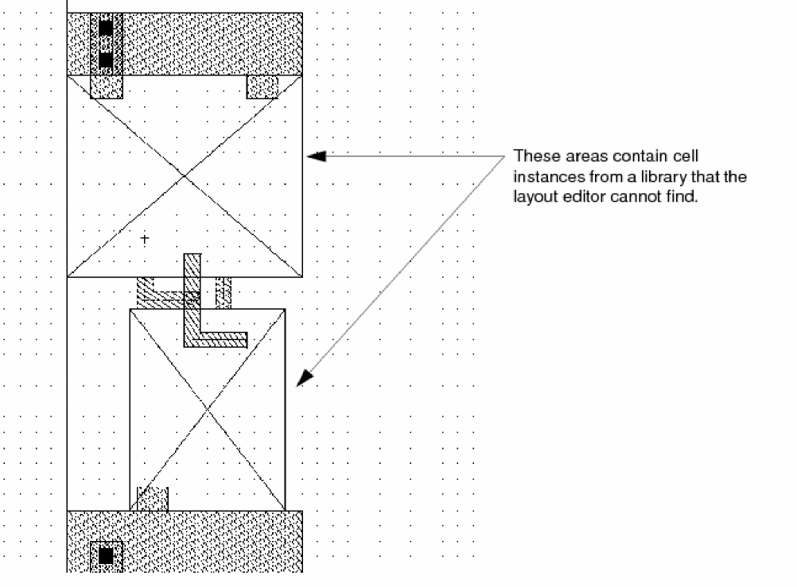

13
Handling Unexpected Results
This chapter contains these topics:
- Design Access Problems
- Problems with Editing and Entering Points
- Mouse and Cursor Behavior
- Selection Tips
- Window Display Tips
- Problems with Stretching Parameterized Cells
Design Access Problems
You might encounter the following situations while working in the Virtuoso® Layout Suite L layout editor.
Cannot Find a Library
If you do not see the name of the library you want in the Library Name field of the Open File form, one of the following might be true:
Cannot Open a Cellview
If you cannot open a cellview in a library, you might not have read access to the cellview files or the library might be empty. In these situations, the <None> in the Cell Name and View Name fields.
To gain read access to the cellviews in a library,
-
Do one of the following:
- Change the access permissions using the Tools – Library Manager – Edit – Access Permissions form.
-
Use the UNIX command
chmodto change the access permissions in the UNIX directory containing the library.
Cannot Write to a Cellview
If you have write access to a library but cannot open a cellview to edit, one of the following might be true:
- You do not have write access for the cellview file
- Another user is editing the cellview and has locked it
If the owner of the cellview set privileges to read only, you see a message like this:
The cellView could not be opened for edit. Do you want to open it for read?
To gain write access to the cellviews in a library,
-
Do one of the following:
- Change the access permissions using the Tools – Library Manager – Edit – Access Permissions form.
-
Use the UNIX command
chmodto change the access permissions in the UNIX directory containing the library.
Cell Instances Are Missing
A cellview often contains instances of cells from other design libraries. If you open a cellview that contains instances of cells from a library that the layout editor cannot find, the following happens:
- When you try to open the cellview, you see a warning dialog box listing cells that the layout editor cannot find
-
When you close the dialog box, the cellview opens, but each area containing a missing cell displays a flashing box with an X

-
Add the path to the library containing the cell masters to the
cds.libfile.
Loading an ASCII Template File Returns a CIW Warning Message
Warning in CIW: MPP template name is replacing an existing MPP template
When you load an ASCII MPP template file, the system checks the names of the MPP templates in the ASCII file against the names of MPP templates that already exist in the technology file in virtual memory. If there is a name conflict, the system displays a warning in the CIW saying that an MPP template in the ASCII file is replacing an existing MPP template.
The existing template is overwritten in virtual memory. If you do not want to overwrite the original MPP template in your binary technology library on disk, then do not save changes to the technology file. You can also avoid overwriting existing templates by changing the duplicate names in your ASCII file.
If you want to change the names of the MPP templates in your ASCII file right away, or you want to be able to save other changes to your technology library on disk without overwriting the original template, you need to:
- Exit the layout software without saving technology file changes.
- Edit your ASCII file to change template names.
- Restart the layout software.
- Reload your ASCII MPP template file.
Problems with Editing and Entering Points
Mistakes Entering Points
If you enter a point incorrectly, you can delete it.
To delete the last point entered,
If you finish creating an object and then find it is incorrect, remove the object by undoing the last command (choose Edit – Undo).
Entered Points on the Wrong Layer
You create objects on layers that represent the layers of your physical design. The Layer Selection Window controls which layer the object will be created on.
-
If you notice you are creating objects on the wrong layer, click the layer you want in the Layers assistant.
The current entry layer changes to the one you chose.
If you finish creating an object and notice it is on the wrong layer, change the layer for that object by doing either of the following:
- To move the object to a new layer, use the Move command.
- To change the object’s layer property, use the Properties command.
Cannot Move Objects or Enter Points As Required
You might need to change the snap mode if you see the following behavior:
To change this behavior, change the snap mode by doing the following:
-
While the command is active open the pop-up options form by pressing
F3. - Choose the snap mode you want.
To change the create and edit snap mode defaults,
-
Choose Options – Display.
The Display Options Form appears. - Choose a new value for the Create or Edit Snap Modes.
- Click OK.
Object Moves Instead of Stretching
If an object moves when you expected it to stretch, you probably selected the whole object rather than its edge or corner. To stretch an object, you must select only the edge or corner you want to stretch.
If you want to select edges or corners (vertexes), you must first set partial selection on. Partial selection lets you select edges or corners with the selection box.
To toggle partial selection on or off,
When partial selection is on, the Status Banner or the Status Toolbar show a P in front of the number of selected objects.
(P) Select: 1
Object Changes Shape When Resizing
The Size command and the Grow By option for the Layer Generation command each let you resize an object by stretching its corners. Sometimes enlarging or reducing the object causes it to change shape.
For example, if you use Size to enlarge the following polygon by 1 unit, each vertex stretches in both the X and Y direction by 1 unit, and the notch in the polygon disappears. The resulting shape is stored as a rectangle, rather than a polygon.
To cancel the changes you made by resizing a shape,
Cannot Paste an Object
If you use Yank and Paste to cut through the hierarchy and place parts of an instance into a different library, the new library must define all the layers you yanked. If it does not, you see the message
Shapes on invalid or invisible layers not pasted.
The Yank command lets you copy an area of the cellview, cutting through layers of hierarchy. You can select just part of an instance to copy with Yank, then use Paste to place the parts of the instance you copied into any cellview.
Pcell Parameters Do Not Appear
The parameters for parameterized cells (Pcells) appear in the Create Instance form as you place an instance of the Pcell.
When you type the name of a cell into the Create Instance form, you must tell the system you are done before the Pcell parameters will appear.
-
If Pcell parameters do not appear in the Create Instance Form, press
Tabto tell the system you are done typing the cell name.
If the form is at the bottom of your screen, the parameter section can scroll off the screen.
- If the Create Instance form is at the bottom of your screen, move the form up to see the parameters.
If you use Component Description Format (CDF) C-level function parameters for your library or for any cells in the library, and your Pcell was compiled in version 4.2.1 or earlier, the CDF parameters suppress the Pcell parameter display.
Cannot Edit the Properties of Selected Instances
When multiple instances are selected and the common button is on, some fields may be grayed out and uneditable. This is because any instance parameters which have Component Description Format (CDF) SKILL function callbacks cannot be edited, unless all of the instances are the same component (in the case of Pcells the same super master) and have identical parameter values. Instances of different components without identical parameter values must be edited individually to ensure consistent data.
Mouse and Cursor Behavior
Right Mouse Button Does not Work
By default, the right mouse button works as follows:
- To display the pop-up context menu, click the right mouse button once
- To zoom in, press and hold the right mouse button and create a box
-
To zoom out, press the
Shiftkey and hold the right mouse button and create a box
If the right mouse button does not do any of these tasks, it is probably set to create strokes. A stroke is a pre-programmed figure you can create to start a command.
If strokes are still on when you restart, then the commands to load strokes are included in your .cdsinit file.
To remove the stroke commands from your .cdsinit file,
-
Use a text editor such as
vito open your.cdsinitfile (usually located in your current or working directory). -
Look for these lines in your
.cdsinitfile:load(prependInstallPath( "etc/sted/stroke.il")) load(prependInstallPath( "etc/sted/defstrokes.il")) hiLoadStrokeFile("def.strokes" "Layout")
-
Type a semicolon (
;) in front of each line to comment it out. -
Save the edited
.cdsinitfile. - Exit and restart the Cadence software.
Pointer Changes Shape
The mouse pointer changes shape to show you how you can use it to select, move, or stretch objects. If you see the pointer change shape, this is not an error.
Cursor Sticks to Objects
If the mouse cursor seems to jump to or stick to objects in your cellview, the gravity setting is most likely on.
Gravity causes the mouse cursor to automatically snap to objects and grid points in the cellview. You typically use gravity when you want to snap the cursor to specific types of objects as you create them.
-
Move the mouse into a layout window and press
g.
If this does not work, your system administrator changed the default key bindings. Use the Layout Editor Options Form to set gravity.
Cursor Snaps to the Wrong Object
If you want to use gravity but the cursor snaps to the wrong object, you might need to change the gravity settings. Use the Layout Editor Options Form to change the gravity settings.
Cursor Does not Snap to a Point
If gravity is set off and the cursor does not snap to the grid point you want, the snap spacing might be set too wide. The X and Y snap spacing settings control the number of units at which the cursor snaps to the grid. Use the Display Options Form to change the snap spacing settings.
Selection Tips
Selectable Layers
All layers are selectable if they are included and set to selectable and valid in the techDisplays subsection in the technology file, whether or not they appear in the Layers assistant. If they do appear in the Layers assistant, you can turn on or off their selectability or validity in the Palette Assistant.
How to Make a Layer Selectable
In the Palette Assistant, you can turn off selection for one or more layers. When you do, a layer that is not selectable appears with its name shaded in the Layers assistant.
The only objects you can select in a cellview are on selectable layers in the Layers assistant.
Selection During Edit In Place
If you are editing a cell instance in place, you can select and edit only those objects within the instance. Even though you can see objects around the instance, you cannot edit them.
-
To check to see if you are editing in place, look at the cellview banner to see what instance you are editing.
If the name in the banner does not match the name of the current cellview, then you are editing a cell in place. - To return to editing the current cellview, choose Edit – Hierarchy – Return.
How to Select Objects in a Dense Design
If you click objects in a dense design and the layout editor does not select the object you want, try any of the following:
-
If objects share the edge you chose, click again in the same place.
The layout editor selects another of the objects. (The layout editor toggles between only two possible objects.) - If possible, move the cursor closer to another edge of the object and click.
-
If possible, zoom in on the edge you want to select.
Use the View – Save/Restore – Previous View command to zoom back out again after selecting the object. - Use the Palette Assistant to turn off selectability for:
Instance Selectability
If you cannot select an instance, check to see if Inst in the Palette Assistant is turned off.
Problems Selecting Copied Objects
If you move or copy an object into a cellview in a different library and then cannot select the object,
If the layer is not defined for the library, cancel the copy by doing one of the following:
- Choose Edit – Undo in the original cellview.
- Choose File – Discard Edits in the new cellview to delete all edits you made since you last saved the cellview.
If the layer has been removed from the Layers assistant, replace it by choosing Edit – Set Valid Layers.
Mouse Buttons for Zooming and Selecting
If you create a selection rectangle and the image in the cellview is enlarged or reduced, you drew the rectangle using the right mouse button instead of the left mouse button. Dragging right starts Zoom In and Zoom Out commands.
- Creating a rectangle with the right mouse button enlarges the cellview image.
-
Creating a rectangle by pressing
Shiftwith the right mouse button reduces the cellview image.
If you inadvertently zoom in or out instead of selecting objects,
- Choose Previous from the View – Save/Restore – Previous View menu to re-display the cellview as it appeared before you zoomed in or out.
- Click and drag to create a rectangle to select objects.
How to Select Invisible Objects
If a NA outlines an area of your cellview that appears blank, you probably turned off the visibility of all layers that appear in an instance and selected that invisible instance.
For example, if you clicked NV in the Layers assistant to set all layers invisible, but Instances in the Objects assistant is still on, you can select the invisible instances.
Window Display Tips
How to Make a Design Layer Visible
If you cannot see one of your design layers, it is probably set to be invisible. A layer that is invisible appears with its layer color shaded in the Layers assistant.
How to See Instance Contents
If you see only an outline of each instance instead of the details of objects inside the instance, change the display level settings.
-
Press
Shift-f.
Shift-fis the bindkey equivalent of using the Display Options form to set the display levels to 0 through 32.
Displaying Instances You Are Editing
If you are editing a cell in place, you can set the window to display only the instance you are editing.
To see the rest of the instances,
-
Choose Options – Display.
The Display Options Form appears. - Set EIP Surround on.
- Click OK.
How to See What the Search Command Finds
If you use the command to search for or select objects and your cellview is zoomed in, the command might find an object that is not visible in the current window.
To zoom the cellview so the objects searched appear in the window:
- In the Find/Replace Form, set Zoom To Figure on.
Now each time you click Previous or Next, the cellview is redrawn so that the object is centered in the window.
Problems with Stretching Parameterized Cells
Pcell Stretch Handles Are Not Visible
If you cannot see handles on stretchable Pcells, the option might be turned off or the stretch handle layer might not be visible.
You can check whether Pcell stretch handles are set to display with the layout editor Display Options form or with the graphic and layout editor environment variable displayStretchHandles. The default is to display stretch handles. You cannot stretch a handle unless it is displayed.
If the Stretch Handles option is turned on, and you still cannot see stretch handles on your Pcell, the layer containing them might not be visible. See Making the Stretch Handle Layer Visible.
Turning On Stretch Handle Display in the Options Form
To turn on Stretch Handles in the layout editor Display Options form, do the following:
- Choose Options – Display.
- In the Display Options form, if necessary, turn on Stretch Handles and click OK.
Turning on Stretch Handle Display in the CIW
To turn on displayStretchHandles environment variable, do the following:
-
Type the following in the CIW:
window = hiGetCurrentWindow()
-
To display stretch handles type the following in the CIW:
window~>displayStretchHandles = t
Making the Stretch Handle Layer Visible
The default layer for stretch handles is y0 drawing. To make that layer visible, do the following:
- In the Layers assistant, choose Edit Valid Layers.
- In the Show Selected Set Form, click y0 dg and click OK.
-
In the Layers assistant, click AV to make all layers visible.
To see the results of your changes, you need to redraw the window. - Choose View – Redraw.
stretchHandlesLayer environment variable. Difficulty Selecting Pcell Stretch Handles
If you have trouble selecting stretch handles, use area selection rather than point selection or try turning off the layout editor Gravity On option. To turn off gravity, do the following:
- Choose Options – Editor.
- In the Layout Editor Options form, click to turn off the Gravity On option.
- Try again to select a stretch handle.
Return to top